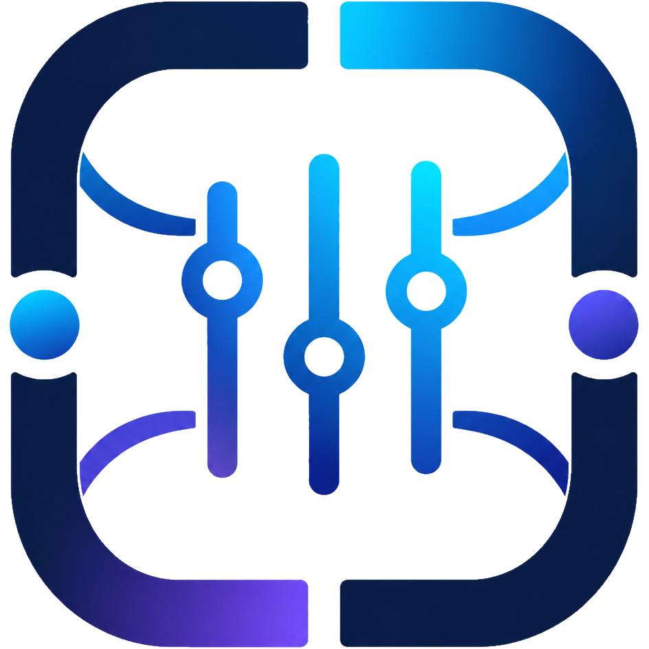

Seçtiğin çözünürlükte desteklenen Hz'ler
Bu hesabı profil olarak kaydet; farklı hesaba geçince üstteki menüden seçip tekrar uygulayabilirsin.
Ayarların bozulmaması için önce Valorant'ı tamamen kapat (ana menüden çık), sonra tekrar dene. Oyun açıkken yapılan değişikliği Valorant çıkışta geri yazar.